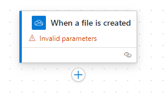
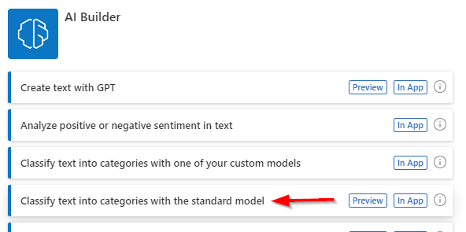

Using the same in-private browser instance, navigate to the Power Automate site if you are not already there.
In the top right of the screen, ensure the Environment is set to AIBuilderEnv.
Choose + Create from the navigation on the left.
Next click on the Automated cloud flow button.

In the following dialog select When a file is created for OneDrive for Business then click Create

Click the When a file is created action.

Similar to the previous exercises we need to configure this trigger step. So select the step and choose a folder to use (eg. Root)

Next click on the plus sign and select Add an action

Search for prompt and click on the See more link under AI Builder

Choose Classify text into categories with the standard model

Select English from the first dropdown for the selected step. Then select the Text box below and select the lightning bolt to choose File content
Next click on the plus sign and select Add an action

Search for notification and then select Send me an email notification

Click in the Subject text box and click on the lightning bolt

For both Subject and Body select Classification from the options

Click on Save and wait a few moments until you get a confirmation that the flow has been saved

Then click on Test and choose the radio button for Manually and finally click the Test button. Similar to the previous exercise you need to kickoff the test, switch the OneDrive and upload one of the files in the **AIBuilderLabFiles* folder.
Now upload one of the review documents to OneDrive for Business
Review the emails sent in Outlook Web Access to see their classification.